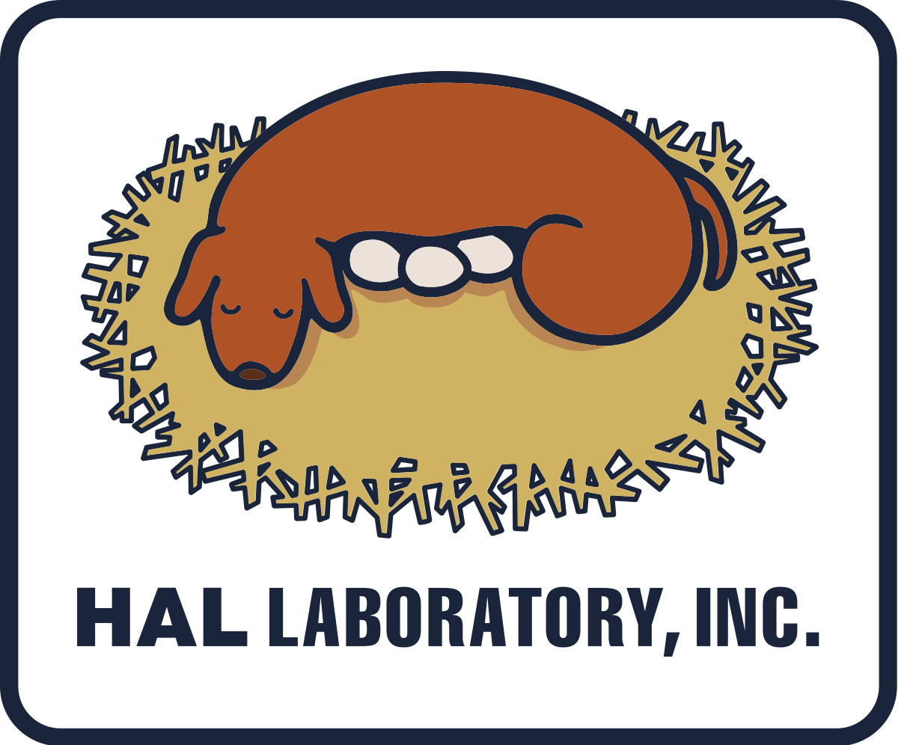

ABOUT HAL LABORATORY
Founded in 1980, HAL LABORATORY is a Japanese video game developer, most famous for its Kirby and Super Smash Bros series.
HAL LABORATORY had its debut making games for the MSX and VIC-20 systems, and later went on to develop games for various video game consoles.
In 2001, HAL LABORATORY and Nintendo formed Warpstar Inc., a joint venture to manage Kirby's IP and copyright.
Other games developped by HAL LABORATORY include Picross 3D, Pokemon Ranger (co-developped with Creatures Inc., Part Time UFO, and ny more!
Fun fact - HAL LABORATORY decided on the letters HAL, as it put each letter one above IBM's.
